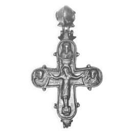
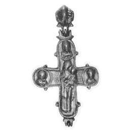

Catalog › CE-0024 · LOV1999-18
Encolpion bivalv kievean cu Răstignirea, Maica Domnului cu Pruncul și Sf. Nicolae
sec. XI–XII (1001–1200) · Dunaszentmiklós, Komárom (Kom.), Ungaria · Muzeul Național Maghiar, Budapesta, inv. 1870.117
double-sided reliquary cross (enkolpion), bronz; c. XI–XII (1001–1200); found at Dunaszentmiklós, Komárom (Kom.), Ungaria; kept at Muzeul Național Maghiar, Budapesta.




Identificare
- Categorie
- Encolpion bivalv (relicvar)
- Material
- Bronz
- Tehnică
- Turnare în relief; Aurire
- Dimensiuni
- Î 110 × L 78 mm
Iconografie
- Avers
- Răstignirea (Hristos cu perizoma); Sf. Nicolae; Sf. Ioan
- Descriere avers
- Hristos răstignit cu perizoma, stând pe suppedaneum, capul căzut înainte, cu nimb cruciform; deasupra capului, tăblița cu IC XC; de o parte și de alta, în medalioane rotunde, busturile Mariei și ale Evanghelistului Ioan; sus, în medalion, Sf. Nicolae.
- Revers
- Maica Domnului cu Pruncul
- Descriere revers
- În mijloc, Maica Domnului cu Pruncul; la capetele brațelor de sus și laterale, în medalioane cu chenar perlat, câte un bust cu inscripție gravată ilizibilă.
- Inscripții
- IC XC; ΜΡ ΘΥ / ΗΟΑΝЪ / ΝΗΚΟΛΑ
- Limba
- Alta
Datare și atribuire
- Datare
- sec. XI–XII (1001–1200)
- Centru
- Rusia Kieveană
Descoperire
- Localitate
- Dunaszentmiklós
- Regiune
- Komárom (Kom.)
- Țară
- Ungaria
- Context
- Tezaur
- Coordonate
- 47.7044° N, 18.3813° E
- Precizia locului
- Doar localitatea
Păstrare și referințe
- Colecție
- Muzeul Național Maghiar, Budapesta
- Nr. inventar
- 1870.117
- Bibliografie
- Zs. Lovag, Mittelalterliche Bronzegegenstände des Ungarischen Nationalmuseums (Catalogi Musei Nationalis Hungarici, Series Archaeologica III), Budapest, 1999, p. 26, cat. nr. 18, reprodusă la Abb. 18 a-b (planșele, p. 132). Bibliografie citată în sursă: Ebenhöch 1871, 113; Bárány-Oberschall 1953, 218; Lovag 1971, 158, Fig. 4; Lovag 1979, 9; Lovag 1994, II-5.
- Figura
- Abb. 18 a-b
- Planșe
- Lovag 1999, planșele, p. 132
- Observații
- Datare după Lovag: sec. XI–XII. XI–XII. Cele două jumătăți, goale pe interior, sunt unite prin balamale între ele și cu inelul de agățare, mare, în formă de dublu trunchi de con. H 11 cm (14,5 cm cu inelul). Găsit în pământ împreună cu crucea cat. 19, un picior de cruce, două cruci de procesiune (cat. 45 și 144). Inscripțiile combină litere grecești și chirilice. Coordonate: ale localității (aproximative), nu date în sursă.
Citare: Corpus Encolpiorum, CE-0024, Encolpion bivalv kievean cu Răstignirea, Maica Domnului cu Pruncul și Sf. Nicolae, https://vitaliejosanu1979-ux.github.io/primul-meu-proiect/piese/LOV1999-18/ (accesat 2026-10-17).